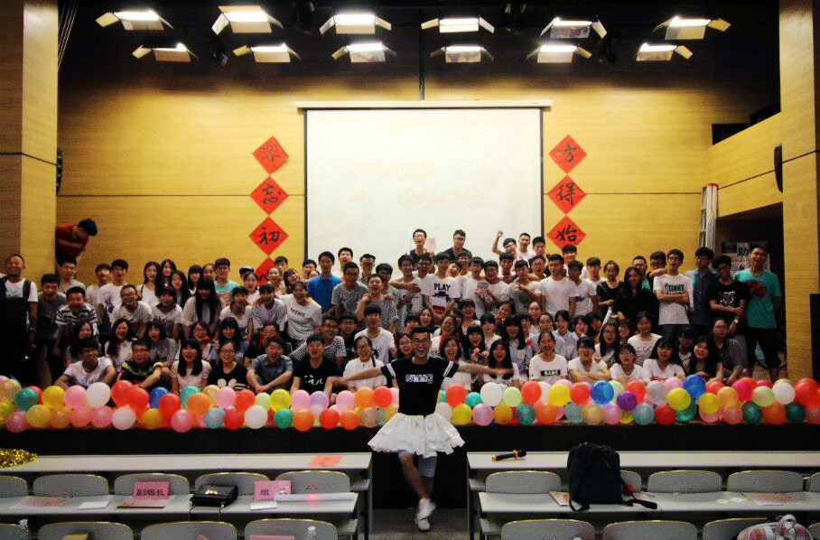

校学生工作助理组
第二十三届年度总结汇报暨表彰大会
- 邀请函 -
让我们相约6月14日18:00，小礼堂不见不散~
时间如同奔流的江河一去不回，来不及告别。如今一年的工作也接近尾声，回首过去，这一年对我们而言是收获的一年，这一年我们创新进取，也取得了很多骄人的成绩，留下了很多回忆。本次活动旨在回顾一年工作，进行总结，表彰各位优秀组员，并进行颁奖等……
诚挚邀请
您参加6月14日18：00的校助理组年度总结汇报暨表彰大会
地点
小礼堂 | 天津职业技术师范大学

校学生工作助理组 敬上
制作：网络部
微信关注： TUTE校学生工作助理组